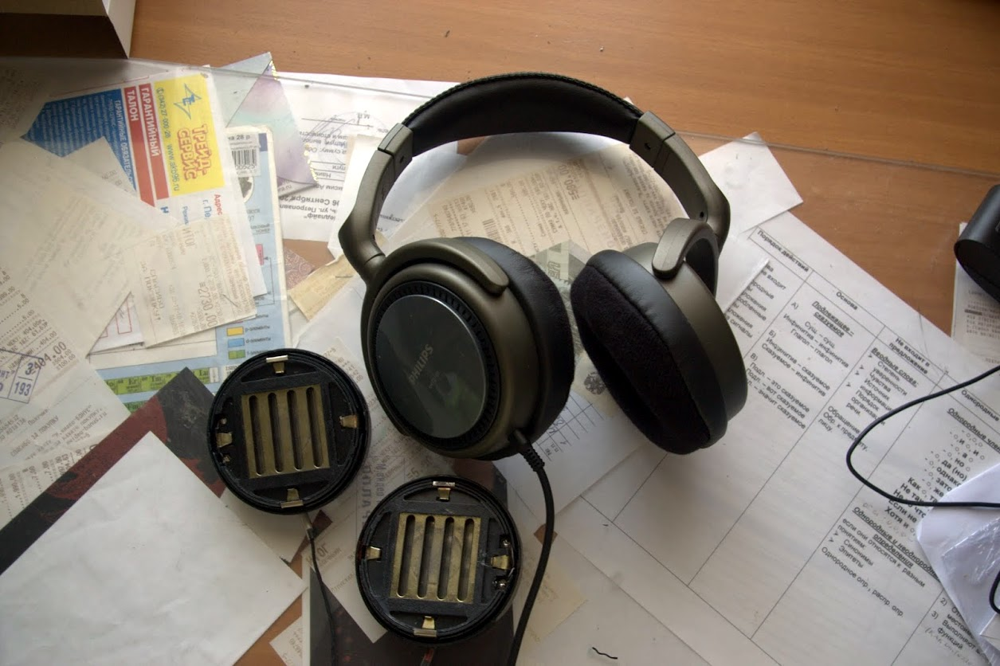

Хаюшки, это макет моего блога, в который периодически буду выкладывать разнообразные записи. В основном связанные с музыкой / модифицированием всякой хрени / рассказами разной степени бредовости.
Вот, например, пара последних записей, дабы вы поняли, о чём идёт речь.
Depth on zero
Моддинг Амфитон ТДС-15

Куски ТДС-15 и не толькоПочти те же куски ТДС-15
Многие слышали о советских наушниках Амфитон ТДС-15, а может быть даже их и слушали. Скажу вам, честно, классные наушники, но вот увы, есть у них минус: производство их закрылось в 1993 году, поэтому качество оставшихся экземпляров оставляет желать лучшего. Не, с динамиками всё ок, а вот с оголовьем и корпусами может быть не всё в порядке. Так и вышло у меня, корпус разваливался, носить наушники было неудобно, ну никак.
Поэтому я взял всю свою волю в кулак, жаль вся не поместилась, и решил сделать мод корпуса, а точнее - найти новый корпус для наушников. Задача не сильно лёгкая, т.к. размеры драйвера у ТДС-15 не стандартные, и подобное ныне встречается редко. Долго и нужно я рылся в интернетах, ходил в магазины с линейкой, что бы найти наушники с нужным корпусом. Хотя очень весело гадать внутренние размеры корпуса, зная только наружные. Но несмотря ни на что, мне помог метод Ивана Васильевича Тыка, и выбрал я Philips SHP2700, и не промазал!
Второй мой рассказ, написан в том же стиле, что и первый, но смысл уже иной. Аналогично с первым рассказем - читайте сами, предисловия не нужны. И раз уж вы тут - прошу ступить на Аллею веры.